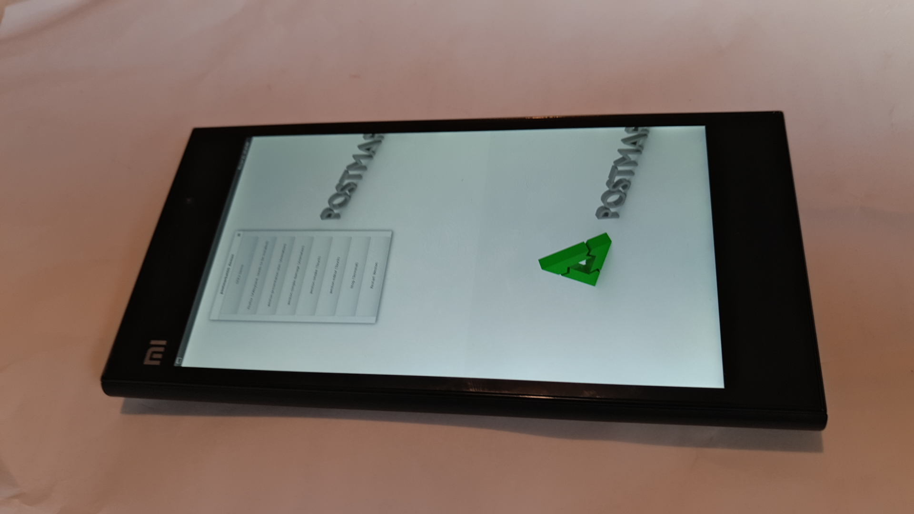

Xiaomi Mi 3 (xiaomi-cancro)
Jump to navigation
Jump to search
| This device is still running on armhf, although the processor supports armv7. If you own it, change it and test it that way. |
|
 Xiaomi Mi 3 running Weston | |
| Manufacturer | Xiaomi |
|---|---|
| Name | Mi 3 |
| Codename | xiaomi-cancro |
| Released | 2013 |
| Category | testing |
| Original software | Android 4.3 |
| Hardware | |
| Chipset | Qualcomm Snapdragon 800 (MSM8274AB) |
| CPU | Quad-core 2.3 GHz Krait 400 |
| GPU | Adreno 330 |
| Display | IPS Display 5 inches @ 1080px x 1920px (441 PPI) (Manufactured by Sharp or LG) |
| Storage | 16 GB / 64 GB ROM eMMC 4.5 |
| Memory | 2 GB LPDDR3 |
| Architecture | armv7 |
{kind=link}
| USB Networking |
Works
|
|---|---|
| Flashing |
Works
|
| Touchscreen |
Works
|
| Display |
Works
|
| WiFi | |
| FDE | |
| Mainline | |
| Battery | |
| 3D Acceleration | |
| Audio | |
| Bluetooth | |
| Camera | |
| GPS | |
| Mobile data | |
| SMS | |
| Calls | |
| USB OTG / USB-C Role switching | |
| NFC | |
| Accelerometer | |
|---|---|
| Magnetometer | |
| Ambient Light | |
| Proximity | |
| Hall Effect | |
| Barometer | |
| Power Sensor | |
| Camera Flash | |
|---|---|
| Keyboard | |
| Touchpad | |
| USB-A | |
| HDMI/DP | |
| Ir TX | |
| Ir RX | |
| Stylus | |
| Haptics | |
| Ethernet | |
| FOSS bootloader | |
|
This device is based on the Snapdragon 800. See the SoC page for common tips, guides and troubleshooting steps |
Contributors
- kelmes
Device owners
- Crystalast-29 (Notes: display not working)
- Ityt (Notes: Display not working)
- TipzTeam (Notes: Works fine)
How to enter flash mode
- Power + Volume Down (fastboot)
Hardware details
Chipset
The basic chipset is MSM8x74 ("x" denotes the modem code), but conformance to a particular device table on that link are not clear. Below is a superficial, pmos-independent attempt to determine the chipset details from userland. The test device is a 2GB/16GB Mi 3 (WCDMA 2013062 2014 stenciled on back case, below silver "mi" emblem), running twrp 3.1.1-0. Reference values are from Wikipedia.
chipset details
| feature | value | comment |
|---|---|---|
| kernel | 3.4.0-g83662a8-01427-gad51ea1 | Dec 2014 |
| Hardware | Qualcomm MSM8974PRO-AB | implies Snapdragon 801? |
| CPU max freq (KHz?) | 2265600 | 800AA, 801AA v3 or underclocked AB? |
| CPU min freq (KHz?) | 300000 | |
| GPU | ? | |
| GPU max freq (Hz?) | 578000000 | adreno 330? 800AB, or 801AB v3? need GPU stresser & GPU freq stats to confirm |
| GPU max-1 freq (Hz?) | 462400000 | adreno 330 (450MHz)? 800AA, or 801AA v3? |
| GPU min freq (Hz?) | 200000000 | |
| GPU target freq (Hz?) | 330000000 | = min+1 freq. decided by governor? |
| EMMC | ?.? | 800 is 4.5, 801 is 5.0? |
sample commands
cat /proc/version
cat /proc/cpuinfo |grep -i hard
cat /sys/devices/system/cpu/cpu0/cpufreq/scaling_available_frequencies
cat /sys/devices/system/cpu/cpu0/cpufreq/cpuinfo_max_freq
cat /sys/devices/system/cpu/cpu0/cpufreq/cpuinfo_min_freq
cat /sys/devices/system/cpu/cpu?/cpufreq/cpuinfo_cur_freq
cat /sys/devices/fdb00000.qcom,kgsl-3d0/kgsl/kgsl-3d0/gpu_available_frequencies
cat /sys/devices/fdb00000.qcom,kgsl-3d0/devfreq/fdb00000.qcom,kgsl-3d0/max_freq
cat /sys/devices/fdb00000.qcom,kgsl-3d0/devfreq/fdb00000.qcom,kgsl-3d0/min_freq
cat /sys/devices/fdb00000.qcom,kgsl-3d0/devfreq/fdb00000.qcom,kgsl-3d0/cur_freq
cat /sys/devices/fdb00000.qcom,kgsl-3d0/devfreq/fdb00000.qcom,kgsl-3d0/target_freqSensors
For comparison, results from test_sensors on obsolete SailfishOS 2.1.3.7 (armv7hl), kernel 3.4.0-cyanogenmod Dec 2017:
test_sensors
Hardware module ID: sensors
Hardware module Name: Qualcomm Sensors Module
Hardware module Author: Qualcomm Technologies, Inc.
Hardware module API version: 0x1
Hardware HAL API version: 0x100
Poll device version: 0x1000001
API VERSION 0.1 (legacy): 0x1
API VERSION 0.1: 0x65537
API VERSION 1.0: 0x16777217
API VERSION 1.1: 0x16842753
API VERSION 1.2: 0x16908289
API VERSION 1.3: 0x16973825
Got 19 sensors
=== Sensor 0 ==
Name: Accelerometer
Vendor: STMicroelectronics
Version: 0x1
Handle: 0x0
Type: 1
maxRange: 39
resolution: 0
power: 0 mA
minDelay: 8333
=== Sensor 1 ==
Name: Magnetometer
Vendor: AKM
Version: 0x1
Handle: 0x23
Type: 2
maxRange: 4912
resolution: 0
power: 5 mA
minDelay: 16666
=== Sensor 2 ==
Name: Magnetometer Uncalibrated
Vendor: AKM
Version: 0x1
Handle: 0x24
Type: 14
maxRange: 4912
resolution: 0
power: 5 mA
minDelay: 16666
=== Sensor 3 ==
Name: Gyroscope
Vendor: STMicroelectronics
Version: 0x1
Handle: 0x2
Type: 4
maxRange: 35
resolution: 0
power: 6 mA
minDelay: 5000
=== Sensor 4 ==
Name: Gyroscope Uncalibrated
Vendor: STMicroelectronics
Version: 0x1
Handle: 0x8
Type: 16
maxRange: 35
resolution: 0
power: 6 mA
minDelay: 5000
=== Sensor 5 ==
Name: Proximity Sensor
Vendor: Intersil
Version: 0x1
Handle: 0x20
Type: 8
maxRange: 5
resolution: 0
power: 0 mA
minDelay: 0
=== Sensor 6 ==
Name: Ambient Light Sensor
Vendor: Intersil
Version: 0x1
Handle: 0x1
Type: 5
maxRange: 4000
resolution: 0
power: 0 mA
minDelay: 0
=== Sensor 7 ==
Name: Barometer Sensor
Vendor: BOSCH
Version: 0x1
Handle: 0x3
Type: 6
maxRange: 1100
resolution: 0
power: 0 mA
minDelay: 5988
=== Sensor 8 ==
Name: Temperature Sensor
Vendor: BOSCH
Version: 0x1
Handle: 0xc
Type: 7
maxRange: 85
resolution: 0
power: 0 mA
minDelay: 5988
=== Sensor 9 ==
Name: Gravity
Vendor: Qualcomm
Version: 0x1
Handle: 0xd
Type: 9
maxRange: 39
resolution: 0
power: 6 mA
minDelay: 8333
=== Sensor 10 ==
Name: Linear Acceleration
Vendor: Qualcomm
Version: 0x1
Handle: 0xe
Type: 10
maxRange: 39
resolution: 0
power: 6 mA
minDelay: 8333
=== Sensor 11 ==
Name: Rotation Vector
Vendor: Qualcomm
Version: 0x1
Handle: 0x14
Type: 11
maxRange: 1
resolution: 0
power: 11 mA
minDelay: 8333
=== Sensor 12 ==
Name: Significant Motion Detector
Vendor: Qualcomm
Version: 0x1
Handle: 0x1f
Type: 17
maxRange: 1
resolution: 1
power: 0 mA
minDelay: -1
=== Sensor 13 ==
Name: Game Rotation Vector
Vendor: Qualcomm
Version: 0x1
Handle: 0x22
Type: 15
maxRange: 1
resolution: 0
power: 6 mA
minDelay: 8333
=== Sensor 14 ==
Name: Orientation
Vendor: Qualcomm
Version: 0x1
Handle: 0x21
Type: 3
maxRange: 360
resolution: 0
power: 11 mA
minDelay: 8333
=== Sensor 15 ==
Name: Basic Gestures
Vendor: Qualcomm
Version: 0x1
Handle: 0x15
Type: 33171000
maxRange: 7
resolution: 1
power: 0 mA
minDelay: 0
=== Sensor 16 ==
Name: Facing
Vendor: Qualcomm
Version: 0x1
Handle: 0x17
Type: 33171002
maxRange: 3
resolution: 1
power: 0 mA
minDelay: 0
=== Sensor 17 ==
Name: Tilt
Vendor: Qualcomm
Version: 0x1
Handle: 0x18
Type: 33171003
maxRange: 180
resolution: 0
power: 6 mA
minDelay: 10000
=== Sensor 18 ==
Name: Gyro Tap
Vendor: Qualcomm
Version: 0x1
Handle: 0x19
Type: 33171001
maxRange: 6
resolution: 1
power: 6 mA
minDelay: 0See also
- pmbootstrap!1650 Initial merge request
- Device package
- Kernel package